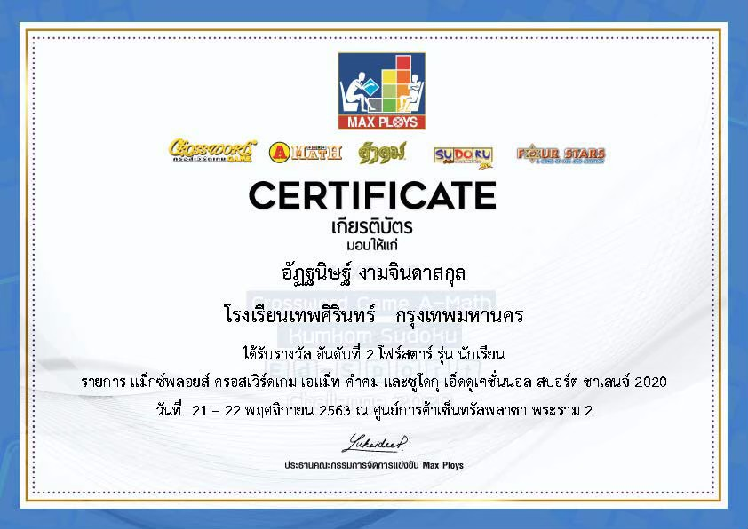
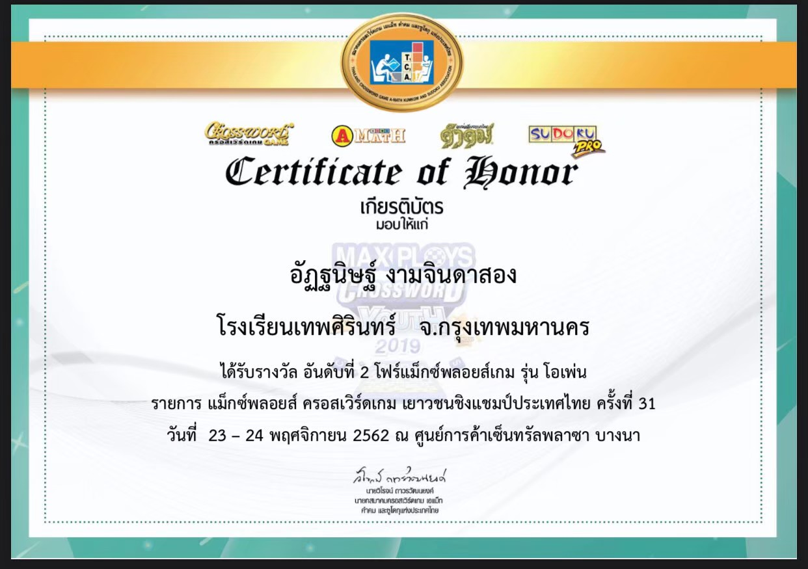
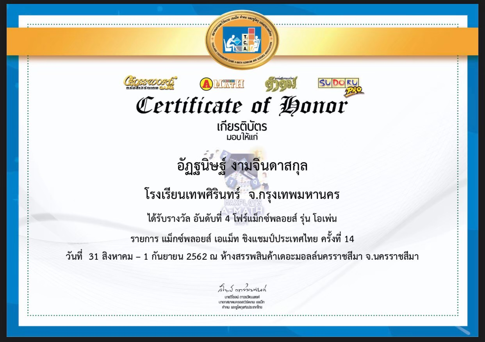
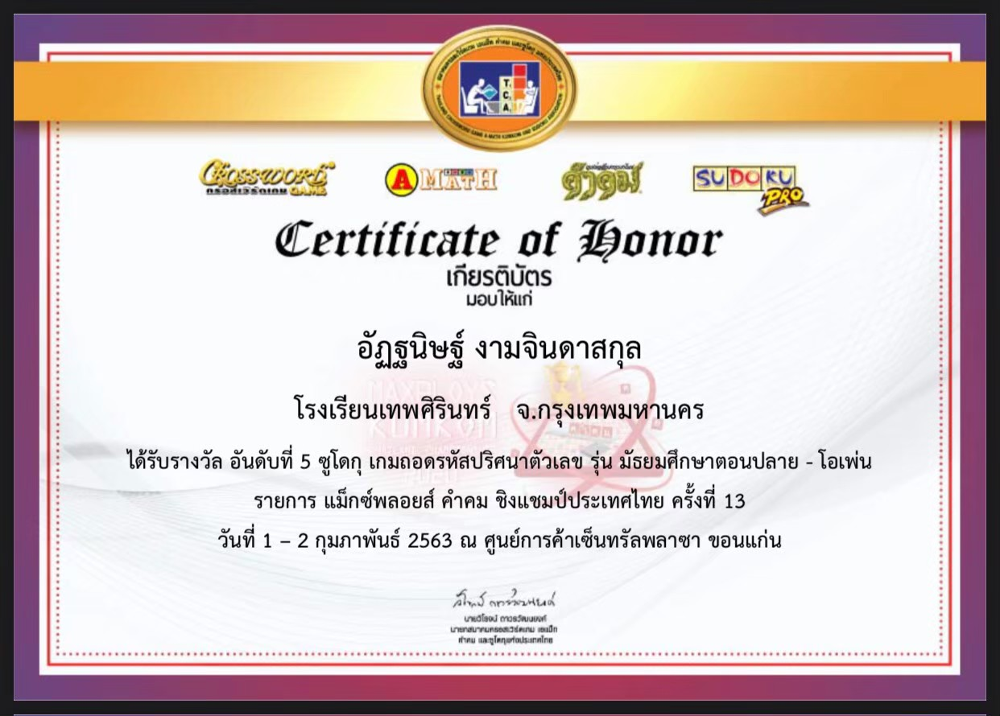
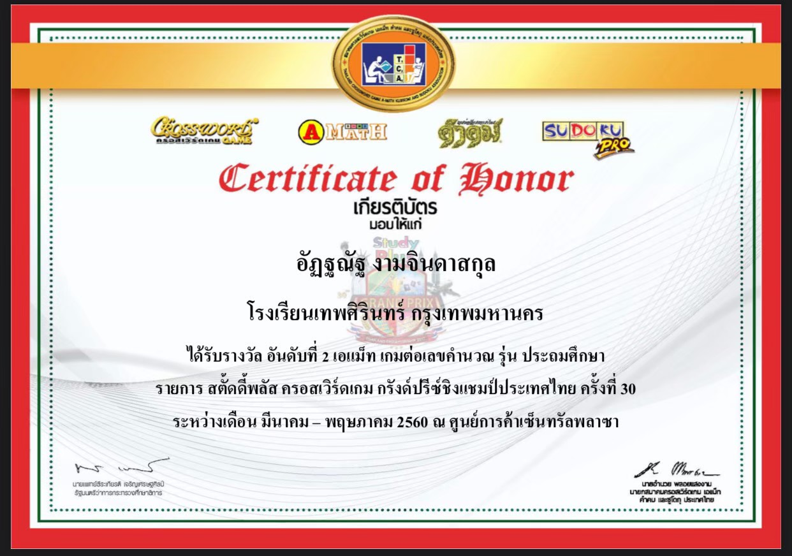
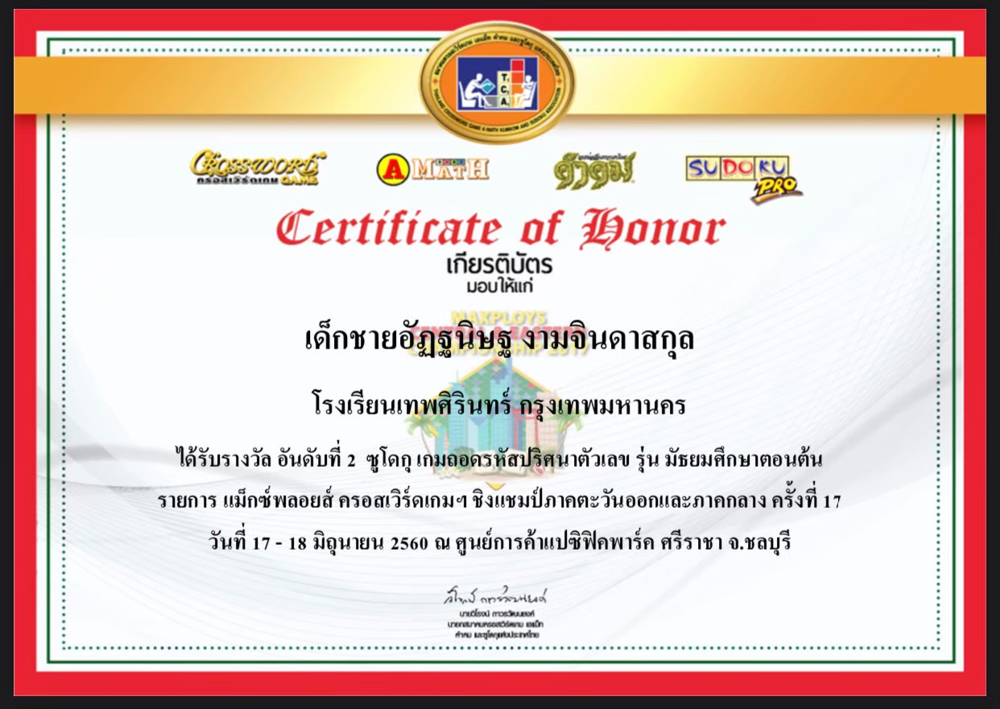
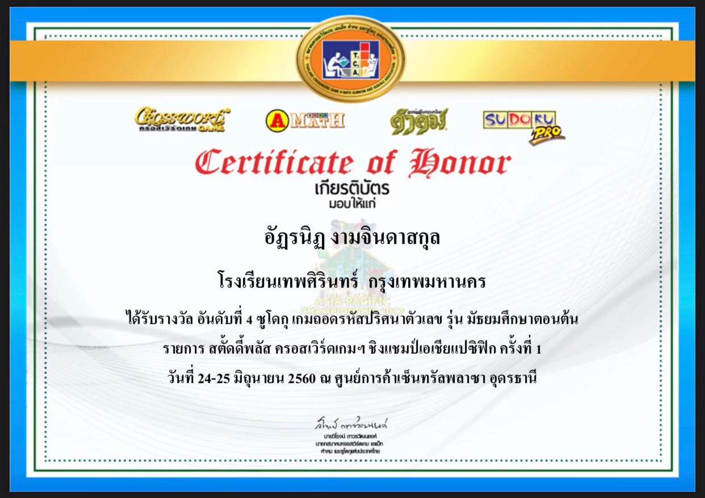
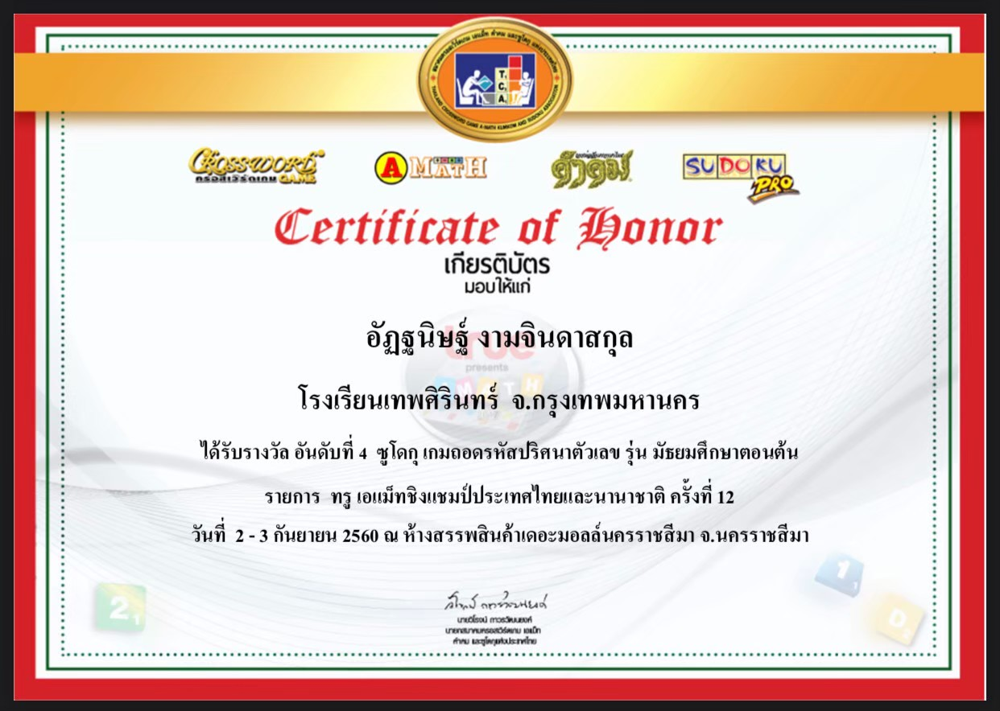
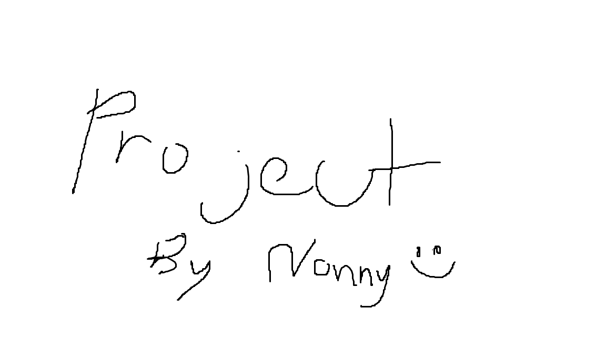

Portfolio / Projects
Portfolio

2nd Sudoku Amateur Brand Thailand and International Championships 32th

2nd Four star Student Maxploy Education Sports Challenge 2020

2nd Maxploy Open Maxploy Crossword Thailand Youth Championship 31th

4th 4Maxploy Open Maxploy A-Math Championship Thailand 14th

5th Sudoku High school-Open Maxploy kumkom Championship Thailand 13th

2nd A-math Middle school Studyplus Crossword Grand Prix Championship Thailand 30th

2nd Sudoku Middle school Maxploy Crossword Eastern and Central Championship 17th

4th Sudoku Studyplus Crossword Asia Pacific Championship 1st

4th Sudoku Middle school True A-math Thailand and International Championships 12th
Projects

Projects (Not ready yet)